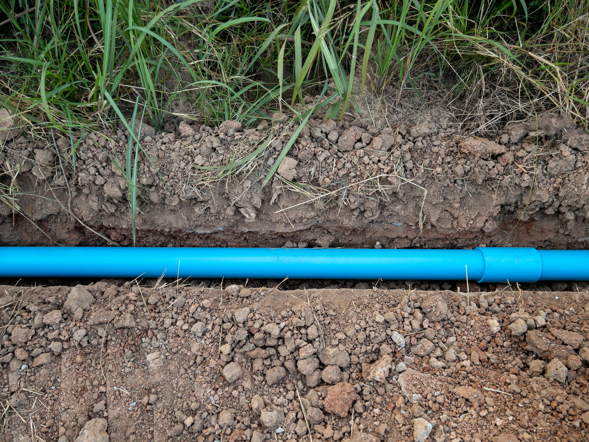
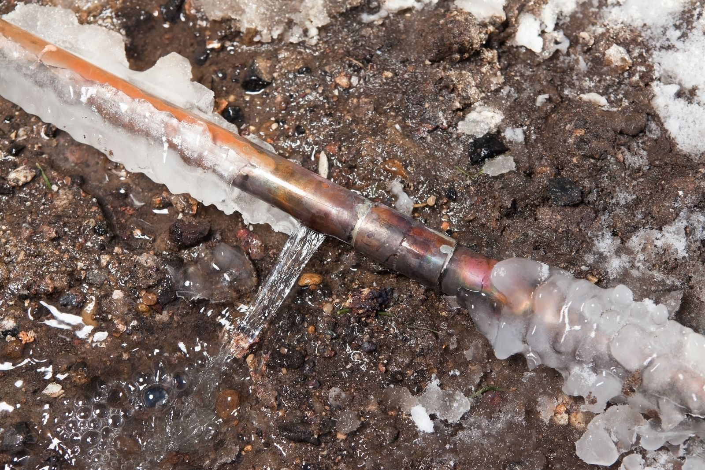
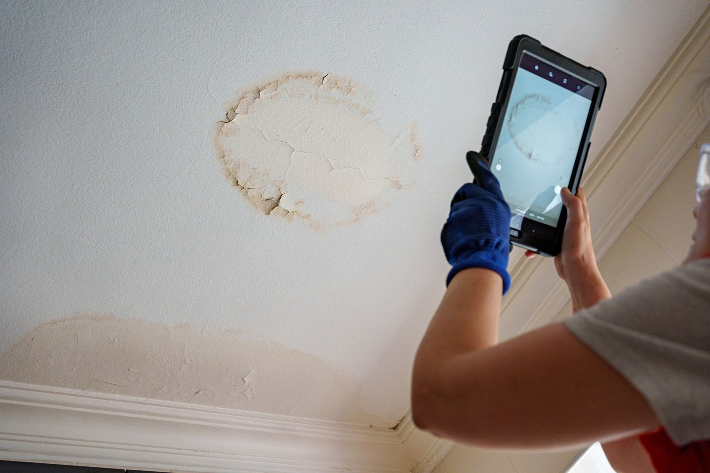
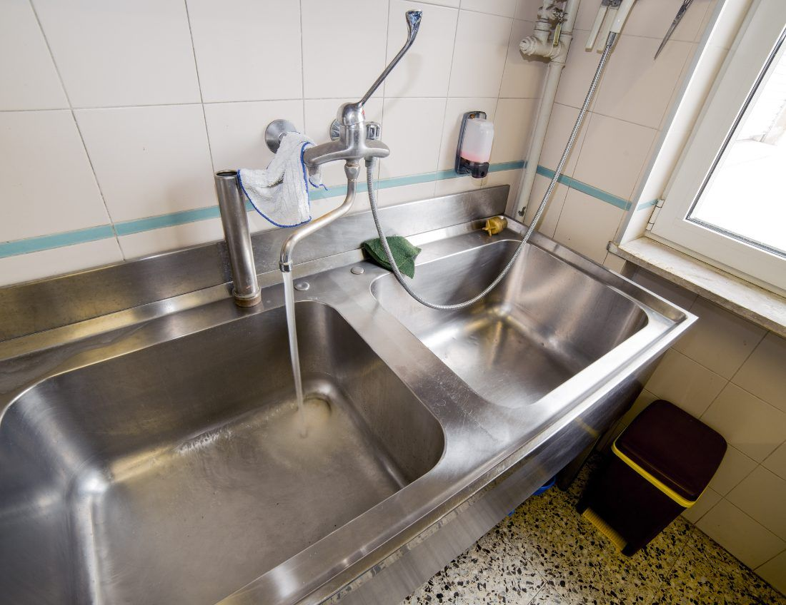

Slow drains. Total clogs. Recurring backups.
Sinks, tubs, showers, floor drains. Snake, cable, or jet depending on the cause.

Roots. Grease. Scale. Broken pipe.
Quote over the phone first. A repair plan only after we know what's actually down there.

High-pressure water. Pipe cleaned, not patched.
Cuts roots, scours grease, and clears scale where a cable just punches a hole.

A recorded HD look at your line.
Get the footage before you buy a house, before you green-light a repair, or anytime a drain won't stay clear.

Steam-thaw. Safe on every pipe.
Safe on clay, cast iron, and PVC. Most thaws take one to three hours. No torches, no electric arcs.

Portfolio coverage, one number.
One point of contact, tenant-ready documentation, consolidated billing. Built for property managers running multiple buildings.

Grease lines, on schedule.
Scheduled jetting on grease lines, drain maintenance that satisfies health inspectors, emergency response before service starts.

Backing up right now? We answer.
Live answer around the clock, same-day dispatch, 90-minute average across Winnipeg. Active backups, overflows, frozen lines, and floods.
A specialist runs the job differently than a general plumber.
Most plumbing shops in Winnipeg list 30 services. Sewer and drain is one of them. Their techs touch a sewer line a few times a month and the rest of the week they're swapping faucets and rebuilding toilet stacks.
We run sewer and drain every day. That means you get a quote over the phone first, the right method goes in second, and the quote you sign is the invoice you pay.
If your problem isn't a drain or a sewer line, we'll tell you and point you somewhere good. Honest about scope is part of why people keep our number.
Same four steps, every job.
You call or book.
Same-day slot for active backups. Or pick a quieter window online.
Quote over the phone.
Tell us what's going on. You get a flat price on the call, before we dispatch.
We clear the line.
Cable, jet, or camera — whatever the line needs. The number doesn't move.
Done. Report sent.
A one-page report by email — plus footage if we ran a camera. Keep it for next time.